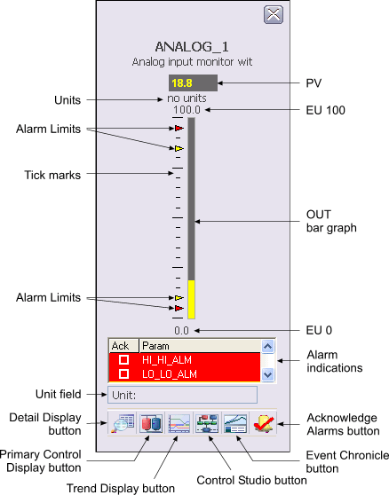

Analog monitoring module faceplate (AI_FP)

The following items are contained in the faceplate:
PV - This field displays the PV value of the AI module in yellow. The background color of the 3-D box changes from gray to orange or red when the PV status becomes uncertain or bad, respectively. The background blinks red when the PV Bad alarm is unacknowledged. The PV value is visible in the decimal format provided by OUT_SCALE.DECPT.
Units - This area provides the engineering units description used for PV and OUT as defined in the OUT_SCALE parameter.
EU 100 - This value corresponds to 100% of scale for PV and OUT.
Tick marks - Use this vertical arrangement of black lines to indicate percentages of Output scale.
OUT bar graph - This field indicates the value of the PV parameter for the AI.
PV Alarm Limits - These arrowheads are vertically positioned relative to the OUT bar graph to indicate the High High, High, Low, and Low Low Alarm Limits for the PV. Although these arrows cannot be dragged with the mouse, the values they indicate can be modified by using the module's detail display. Only alarms that are enabled have a corresponding arrowhead displayed. The color corresponds to the alarm priority.
EU 0 - The value corresponding to 0% of scale for PV and OUT.
Alarm indications - This is a scrollable list of the current alarms that functions like the first two columns of an alarm summary. The first column shows the state of the alarm represented by one of the following symbols:
Active/unacked -- blank field
Active/acked -- checkmark
Inactive/unacked -- empty box
The second column is the alarm name or parameter. The text and colors are as configured for the alarm's current state.
Unit field - This field displays the unit name.
Toolbar - Click the icons from left to right to perform the following functions, respectively:
Detail Display button: open the detail display for the AI module.
Primary Control Display button: open the primary control display.
Trend Display button: open the current trend display for the AI module.
Control Studio button: open Control Studio.
Event Chronicle button: open the Process History Viewer.
Acknowledge Alarms button: acknowledge all alarms on this module.
Module Error indicator (not shown) - A flashing blue bar is displayed below the Detail Display button when a module error occurs. This prompts you to go to the detail display to view and clear the error.